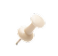
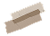
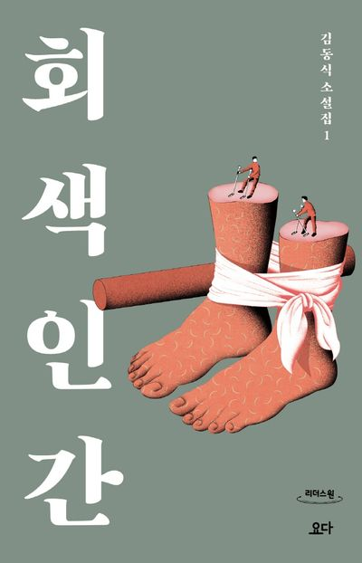

생존 앞에서 무너지는 인간성
곡괭이 자루까지 씹어 먹는 생존의 밑바닥이 정말 충격적이었어. "도덕도 배가 불러야 지킬 수 있는 사치"라는 말이 아프게 다가왔고, 인간다움은 환경에 따라 언제든 무채색으로 변할 수 있는 연약한 것이란 걸 깨달았어.


제목
회색인간
저자
김동식
시작 날
2026. 5. 1
끝난 날
2026. 5. 3
평점

곡괭이 자루까지 씹어 먹는 생존의 밑바닥이 정말 충격적이었어. "도덕도 배가 불러야 지킬 수 있는 사치"라는 말이 아프게 다가왔고, 인간다움은 환경에 따라 언제든 무채색으로 변할 수 있는 연약한 것이란 걸 깨달았어.
노래하는 여인에게 돌 대신 빵을 건네는 변화가 소름 돋았어. 예술은 당장 배를 채워주진 못해도 "우리가 짐승이 아닌 인간임을 증명하는 마지막 보루"라는 의견이 인상 깊었어.
죽어가면서도 소설가에게 이름을 외워달라는 장면이 먹먹하더라. '우리의 이야기'를 남기려는 공동의 목표가 생기면서 사람들이 비로소 서로를 다시 보기 시작한 게 기억에 남아.